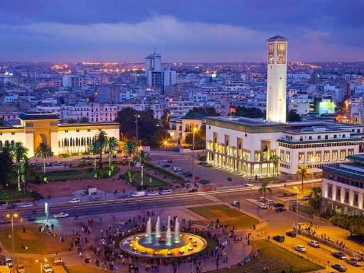

Proyecto Migracions'19
Barres i ones
Proyecto Migracions'19
Barres i ones
Biografia
Entrevista
Plato
Receta
Alumnos

Najat
Nació en Marruecos, lleva 16 años en España. Primero estuvo en Almería y luego vino a Barcelona.
Vino a Cataluña para mejorar su vida, aprender de otra cultura. Vino con el objetivo de estudiar y poder acabar la carrera de derecho.
Al principio fue difícil encontrar trabajo, por no tener papeles.
A nivel culinario, la principal diferencia está en la forma de cocinar y en el uso de las especies.